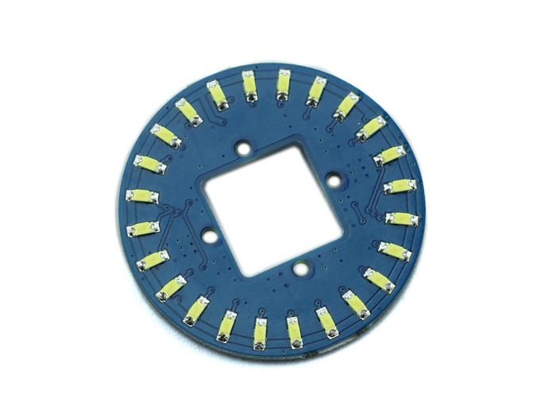

This is a unique ring– it has a florid body with 24 controllable LEDs. Maybe it will drive the inspiration out of you to make a glowing magic ring! There is a 1*1 square hollow-out in the middle of this module, where you can place a Grove Encoder in and make it a rotary visual encoder!

| Item | Min | Typical | Max | Unit |
|---|---|---|---|---|
| Voltage | 4.5 | 5 | 5.5 | VDC |
| Current | / | 5.5 for each LED | mA | |
| Dimension | Ring Form:4.5 diameter | mm | ||
| Net Weight | 12 | g | ||
With the definition "CircularLED circularLED1(10,9);" in the demo, please connect this module to the D9 Grove Connector of Grove base shield with the 4- pin Grove cable. You can also connect the "Yellow" signal to D9 and "White" to D10 with jumper wires.
Please download the CircularLED lib and test this module withCircularLEDtest example. You can click here to learn how to upgrade the sketches.
Please also refer to the Grove-Encoder to learn more about this module.
CircularLED Library
Grove Circular LED schematics PDF File
Grove-circular LED eagle files
Copyright (c) 2008-2016 Seeed Development Limited (www.seeedstudio.com / www.seeed.cc)